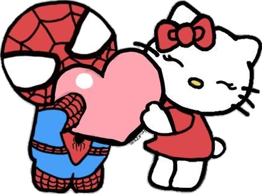

WHY I LOVE YOU
Why i love you? I told you a million times but i guess i can go really in depth on why i love you. I guess i always had a small crush on you but i never truly realized it. I was always smiling at your texts like a dumbass. The way you are always so energetic and the way you simply talk makes my mood go up.
My insecurties just fade away. you make me wanna be better.
You make me daydream too much and all i would want is to be with you forever and ever. I could keep on going but i think
you get the point. You are something precious to me and someone i would never ever want to lose. I love you.... a lot.

Your voice.. is something i have never heard before
you always feel some kind of insecurity about your voice or your accent but whenever i hear
it.. its like im in heaven. Flying accross the clouds. Your resilience and your ability to
move and work everything out is something so beautiful and you should be proud. You can solve
any problem and you are so smart. AND YOUR PERSONALITY. caring, kind, childish and playful. I feel
so loved by you. I feel so happy when im with you.
Your resilience and your ability to
move and work everything out is something so beautiful and you should be proud. You can solve
any problem and you are so smart. AND YOUR PERSONALITY. caring, kind, childish and playful. I feel
so loved by you. I feel so happy when im with you.
i could talk to you for hours without being bored.
When you would scold me about what i do i would always find both cute and nice. I always felt cared for. I always
felt.. i guess cared for. Whenever you were sad i always wanted to be the one to cheer you up and help you.
I would always ramble to others about you.. well to those who i could anyways.
Whenever u would show a picture of yourself i would just stare for hours. To my eyes you were
more beautiful then anyone ever, even back then. When i would go on my stupid breaks you always lingered
on my mind. you were always there.. i would always think "huh what is she up to right now i wonder".
But i would always feel guilty texting you knowing i left you for so long. The way you smile would cheer
even the grumpriest person in this world.
WHY I LOVE YOU